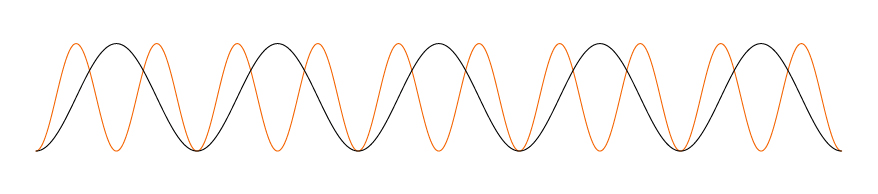
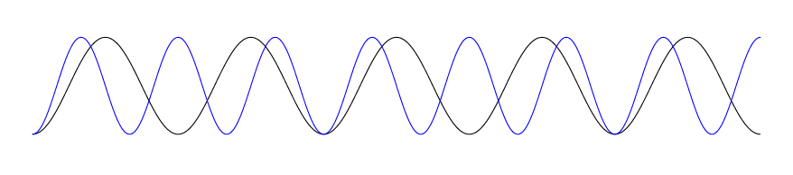
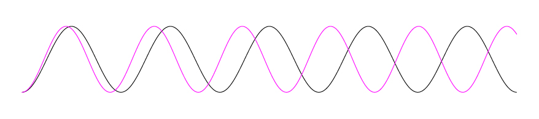

Sound Insight
Look, it's music!

From interesting harmonies to catchy rhythms, there's a ton of math behind the sound we call music. With all those numbers, how could I create a mathematically based music visualization? Of course, music has been visualized before. Here's one of my favorites: link.
So, where should I start with my visualization according to numbers? What are the most important about the experience of music to convey and how best and most accurately to convey those things? I needed to convey the sound of the notes, and the beat of the notes. Well, sound is essentially different freqencies that something vibrates at. With music, the frequencies are very specific, and more importantly, the intervals between pitches are why we experience music as pleasent or unpleasent or sad or happy and make songs distinct in the first place
  In an octave, for example, one note has exactly twice the frequency of another. It sounds like the same note, just higher. A 5th has a ratio of 1/3, and is the difference between the first and second "twinkle" of the little star.\ Usually, it's simple ratios that sound nicer. A 1/23 ratio is more irregular and wouldn't sound as nice.
The other factor was beat and rhythm, or how long each note is held out for


So how could I represent these aspects in visual form? Sound Insight represents each note as an arc of a circle, where the radius of the circle corresponding to the pitch, and the distance around the circumference coresponding to how long the note is held for. In this way, a whole note would be a whole circle, a quarter note a quarter circle. The arcs are linked together tangentially
This is from a particular song I wrote which you can listen to here: You can also listen to more here:
This could also be a moving visualization. Anyone want to collaborate?